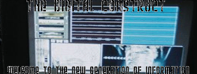

News from The Construct:
4/28/2005
Well I am just about finished with school, so I should have some more free time on my hands. First off is the CIC. I am currently in the process of doing a lite redesign. All I want to do is put a stable version online and let people acess it for information. Hopefully I will get around to doing that. As far as transition goes, I can sucessfully say that I have put an end to the Cybertron Network. Thanks for all your support over the years. I am looking to the future now. With in the coming month Primus Designs is planing to go even further. The CIC was a good idea, but there needs to be a change. As of this point forward further development on the CIC is halted. Thank you again for all of your support. The CIC will remain online, with the final "Service Pak" being released on Saturday May 7, 2005. We look forward to future developments, and begin to prepare Project: NEXT. Stay tuned for further developments.
Primus Designs

|Enter|
Site best viewed in 1024x768 Resolution in 32 bit in Microsoft Internet Explorer 6.0
 |
 |
 |

|
Disclaimer
The Transformer's are tradmark of Takara, Hasbro, Sunbow, and Marvel. This
page is not official and will never be offical, it is a fan run web site.
This web site is not meant to infringe upon any copyrights and or trademarks
that either Hasbro, Takara, Sunbow or Marvel have. This page has been established
for informational and entertainment purposes only. This webpage is property
of Jeremy Borger, the name Cybertron Info Core is copywrited. Please ask before
you take my information or pictures.
Click Here